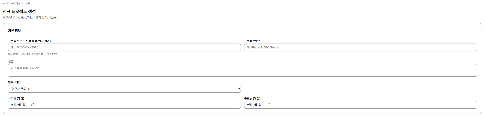
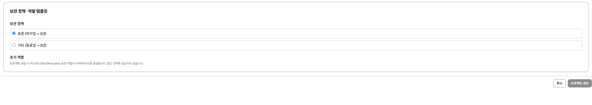
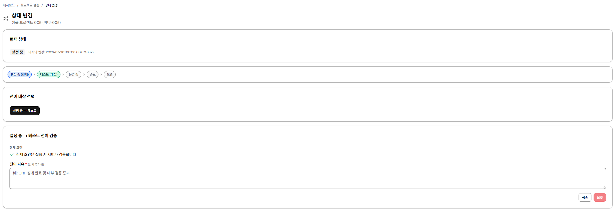
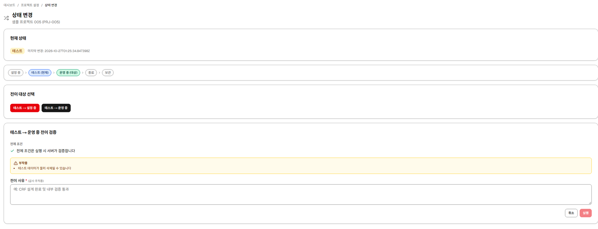
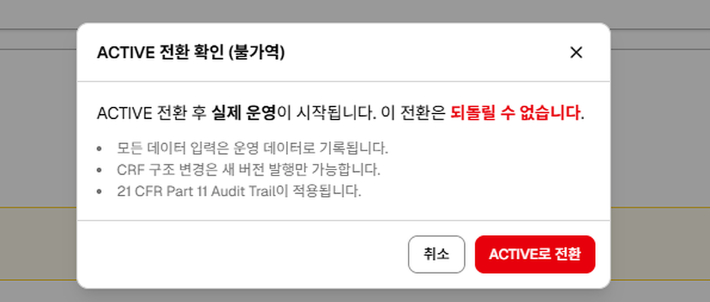
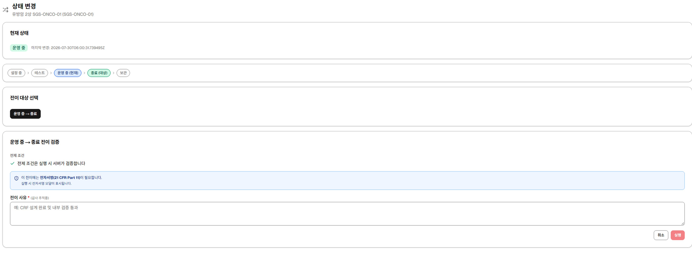

프로젝트
SCR-PRJ-002·003·004 · 생성 · 설정 · 상태 변경
프로젝트 생성
- 1.1기본 정보
- 1.2보관 정책 · 초기 역할 · 생성
1.1기본 정보
개요
워크스페이스 안에 프로젝트를 새로 만드는 화면입니다. 프로젝트는 반드시 설정 중 상태로 생성되며, 구축을 마친 뒤 단계적으로 운영 상태까지 올립니다. 별표가 붙은 세 항목만 입력하면 생성할 수 있고, 나머지는 생성 후 설정 화면에서 보완할 수 있습니다.
화면 설명

프로젝트 코드 * (생성 후 변경 불가) — 프로젝트를 구분하는 고유 코드입니다. 라벨에 적힌 대로 생성 후에는 변경할 수 없습니다.
프로젝트명 * — 화면과 목록에 표시되는 이름입니다. 같은 워크스페이스에 동일한 이름이 이미 있으면 확인 창이 표시되며, 확인하면 그대로 생성됩니다.
설명 — 연구 목적·대상·주요 가설을 입력합니다. 선택 항목입니다.
연구 유형 * — 연구자 주도(IIT) · 의뢰자 주도(IND) · 기관 주도(SIT) · 기타 중에서 선택합니다. 기본값은 연구자 주도(IIT)입니다.
시작일 (예상) — 연구 시작 예정일입니다. 선택 항목입니다.
종료일 (예상) — 시작일보다 앞선 날짜를 입력하면 입력란 아래에 “종료일은 시작일 이후여야 합니다” 가 표시되고 생성이 차단됩니다.
← 워크스페이스 대시보드 — 들어온 자리로 돌아갑니다. 입력한 내용이 있으면 폐기 여부를 먼저 확인합니다.
초기 상태: SETUP — 생성 결과가 설정 중 상태임을 미리 안내합니다. 상태를 선택하는 항목은 없습니다.
코드 입력란 아래에 “영문·숫자와 - _ 만 사용 (한글·공백 불가 · 최대 50자)” 가 안내됩니다. 한글이나 공백은 입력하는 즉시 제거되고 영문은 대문자로 바뀝니다.
유의사항
필수 확인 데이터 손상 · 폼 완료 불가
- • 프로젝트 코드는 생성 후 끝까지 변경할 수 없습니다. 프로토콜 번호를 그대로 사용하는 것이 일반적이므로, 승인된 프로토콜 번호를 확인한 뒤 입력하십시오.
1.2보관 정책 · 초기 역할 · 생성
개요
기본 정보 아래에 보관 정책과 초기 역할 안내가 이어집니다. 초기 역할은 선택 항목이 아니라 안내문이며, 표준 역할은 생성과 동시에 시스템이 자동으로 만들어 줍니다.
화면 설명

표준 (허가일 + 3년) — 기본으로 선택되어 있는 보관 정책입니다.
기타 (종료일 + 3년) — 연구 종료일을 기준으로 보관 기간을 계산합니다.
취소 — 생성을 중단합니다. 입력한 내용이 있으면 “변경사항 폐기” 확인 창이 먼저 표시됩니다.
프로젝트 생성 — 필수 항목(프로젝트 코드 · 프로젝트명 · 연구 유형)이 모두 채워질 때까지 비활성 상태로 유지됩니다. 생성이 끝나면 그 프로젝트의 설정 화면으로 바로 이동합니다 2.1.
초기 역할 은 입력 항목이 아닙니다 — “프로젝트 생성 시 PI·CRC·CRA·DM·Auditor 표준 역할이 서버에서 자동 생성됩니다. 별도 선택은 필요하지 않습니다.” 로 안내됩니다.
하단 액션 바는 화면을 내려도 아래에 고정되어 표시됩니다.
유의사항
필수 확인 데이터 손상 · 폼 완료 불가
- • 여기에서 고른 보관 정책은 저장되지 않습니다. 현재 생성 요청에 보관 정책이 포함되지 않고 설정 화면에도 해당 항목이 없습니다. 보관 기한은 설정 화면의 보관 만료일 에 날짜로 직접 입력하십시오 2.2.
프로젝트 설정
- 2.1화면 구성
- 2.2메타 편집
2.1화면 구성
개요
하나의 프로젝트에 대한 메타 정보·집계·상태·하위 화면 진입을 한 자리에 모은 화면입니다. 프로젝트를 만든 직후 착지하는 화면이며, 이후 운영 중에도 설정 성격의 작업은 모두 여기에서 시작합니다.
화면 설명

메타 편집 — 이름·설명·기간 등을 수정합니다 2.2. 편집 권한이 없으면 이 버튼이 표시되지 않고, 이동 경로 옆에 읽기 전용 배지가 표시됩니다.
상태 변경 — 상태 전이 화면으로 이동합니다 3.1.
빠른 진입 — 참여 기관 관리 · 연구자 배정 · 권한 관리 · 변경 이력 · SAE 통보로 바로 이동합니다. 왼쪽 메뉴에도 같은 화면이 있습니다.
왼쪽 메뉴의 설정 > 프로젝트 설정 으로 언제든 이 화면에 돌아올 수 있습니다.
이동 경로는 대시보드 / 프로젝트 설정 입니다. 참여 기관·서명 정책 등 하위 화면에서도 이 자리를 선택하면 이 화면으로 돌아옵니다.
기본 정보 는 조회 상태입니다. 프로토콜 번호·이름·설명·유형·단계·시작일·종료일·IRB 승인일·보관 만료일이 표시되며, 값이 없으면 — 입니다.
집계 — 참여 기관 · 피험자 · 활성 Query 수와 Lock 상태입니다. Lock 상태는 종료되면 HARD, 보관되면 ARCHIVED 로 바뀝니다.
상태 워크플로 — 설정 중 → 테스트 → 운영 중 → 종료 → 보관의 다섯 단계 중 현재 상태가 파랗게 표시됩니다.
유의사항
오해하기 쉬운 동작
- • 종료·보관 상태에서는 편집 권한이 있어도 전체가 읽기 전용이 됩니다. 메타 편집 버튼 자체가 표시되지 않으므로, 버튼이 보이지 않는다고 권한 오류로 판단하지 마십시오.
2.2메타 편집
개요
별도 화면으로 이동하지 않고 설정 화면의 기본 정보 카드가 입력 상태로 바뀝니다. 운영 중인 프로젝트에서는 일부 항목이 잠기며, 잠긴 항목은 입력란 바탕이 회색이고 라벨에 그 사실이 표시됩니다.
화면 설명

이름 * — 표시되는 이름을 수정합니다.
설명 — 연구 개요를 수정합니다.
유형 — 연구 유형을 바꿉니다. 운영 중에도 변경할 수 있습니다.
시작일 — 실제 연구 시작일입니다.
종료일 — 실제 연구 종료일입니다.
IRB 승인일 — 심사위원회 승인일입니다. 생성 화면에는 없고 여기에서만 입력합니다.
보관 만료일 — 자료 보관 기한입니다. 생성 화면의 보관 정책과 별개로 여기에 날짜를 직접 입력해야 기록됩니다 (1.2 유의사항 참조).
저장 — 수정 내용을 반영합니다. 옆의 취소 를 선택하면 변경을 버리고 조회 상태로 돌아갑니다.
이동 경로는 편집 중에도 그대로 유지됩니다 — 편집은 같은 화면 안에서 이루어집니다.
운영 중 이후에는 프로토콜 번호를 변경할 수 없다는 안내가 카드 머리에 표시됩니다.
프로토콜 번호 (잠금) — 라벨에 “(잠금)” 이 붙고 바탕이 회색이며 수정할 수 없습니다. 설정 중·테스트 단계에서는 잠기지 않습니다.
단계 (현재 변경 불가) — 선택할 수 없는 상태로 표시됩니다. 연구 단계는 현재 화면에서 설정할 수 없습니다.
유의사항
필수 확인 데이터 손상 · 폼 완료 불가
- • 저장하는 사이에 다른 사용자가 같은 프로젝트를 수정했으면 저장이 거절되고 최신 내용으로 다시 불러옵니다. 이때 입력한 값은 유지되지 않으므로, 안내 문구를 확인한 뒤 처음부터 다시 수정하십시오.
상태 변경
- 3.1화면 구성 (설정 중 → 테스트)
- 3.2테스트 → 운영 중 전이 선택
- 3.3테스트 데이터 삭제 확인
- 3.4운영 전환 확인
- 3.5운영 중 → 종료 전이 검증
- 3.6종료 확인 · 데이터 편집 차단 동의
- 3.7전자서명 수행
3.1화면 구성 (설정 중 → 테스트)
개요
프로젝트의 상태를 다음 단계로 올리거나 되돌리는 화면입니다. 어떤 전이든 현재 상태 확인 → 전이 대상 선택 → 사유 입력 → 실행의 순서는 같고, 전이 종류에 따라 실행 뒤에 확인 창이 더 붙습니다. 설정 중에서 테스트로 올리는 것은 확인 창이 없는 유일한 전이입니다.
화면 설명

전이 대상 선택 — 지금 상태에서 갈 수 있는 상태만 버튼으로 표시됩니다. 선택한 버튼은 검게 표시되고, 아래에 전이 검증 카드가 이어집니다.
전이 사유 * (감사 추적용) — 필수 입력입니다. 감사 추적에 남는 기록이므로 “예: CRF 설계 완료 및 내부 검증 통과” 와 같이 판단 근거를 적으십시오.
실행 — 사유를 입력하기 전에는 흐리게 표시되고 선택할 수 없습니다. 설정 중 → 테스트는 확인 창 없이 바로 실행되며, 끝나면 프로젝트 설정 화면으로 돌아갑니다.
이동 경로가 대시보드 / 프로젝트 설정 / 상태 변경 입니다. 이 화면은 왼쪽 메뉴에 없고 프로젝트 설정의 상태 변경 또는 역할별 대시보드에서만 들어옵니다.
현재 상태 — 지금 상태와 마지막 변경 시각입니다.
다섯 단계 중 (현재) 가 파랗게, (대상) 이 초록으로 표시됩니다.
전제 조건 자리에는 “전제 조건은 실행 시 서버가 검증합니다” 한 줄만 표시됩니다.
유의사항
필수 확인 데이터 손상 · 폼 완료 불가
- • 전제 조건의 초록 체크는 “통과”를 뜻하지 않습니다. 조건을 미리 검사한 결과가 아니라 실행할 때 확인한다는 안내입니다. 예를 들어 CRF 폼이 한 건도 없으면 실행을 누른 뒤에야 거절됩니다 — 전이 전에 필요한 구성이 갖추어졌는지 각 화면에서 직접 확인하십시오.
오해하기 쉬운 동작
- • 상태 변경 권한은 메타 편집 권한과 다릅니다. 설정 화면에 상태 변경 버튼이 보여도 이 화면에서 차단될 수 있고, 반대로 버튼이 보이지 않아도 권한이 있을 수 있습니다. 차단되면 워크스페이스 관리자에게 문의하십시오.
3.2테스트 → 운영 중 전이 선택
개요
테스트 상태에서는 설정 중으로 되돌리거나 운영 중으로 올릴 수 있습니다. 두 전이 모두 테스트 데이터를 물리 삭제하므로, 선택하면 경고 배너가 함께 표시되고 실행 뒤에 확인 창이 이어집니다.
화면 설명

테스트 → 설정 중 — 구축 단계로 되돌립니다. 붉게 표시되는 것은 데이터가 삭제되는 전이라는 뜻입니다.
테스트 → 운영 중 — 실제 운영을 시작합니다. 선택한 버튼은 검게 바뀝니다.
전이 사유 * — 필수 입력입니다.
실행 — 사유를 입력하면 선택할 수 있게 됩니다. 선택하면 곧바로 전이되지 않고 테스트 데이터 삭제 확인 창이 먼저 표시됩니다 3.3.
현재 상태 가 테스트 로 표시됩니다.
대상으로 선택한 상태가 초록으로 표시되어 어디로 가는지 확인할 수 있습니다.
전제 조건은 여기에서도 “실행 시 서버가 검증합니다” 한 줄입니다 (3.1 유의사항 참조).
부작용 배너 — “테스트 데이터가 물리 삭제될 수 있습니다” 가 표시됩니다. 임상적 이상반응이 아니라 이 전이에 뒤따르는 영향을 뜻하는 화면 문구입니다.
유의사항
필수 확인 데이터 손상 · 폼 완료 불가
- • 테스트 → 설정 중 과 테스트 → 운영 중 은 둘 다 테스트 데이터를 전건 삭제합니다. 피험자·입력 데이터·방문·Query 가 모두 삭제되고 피험자 순번도 0으로 초기화됩니다. 테스트 결과를 남겨야 한다면 전이 전에 데이터 내보내기로 추출해 두십시오.
3.3테스트 데이터 삭제 확인
개요
테스트 상태에서 실행을 선택하면 가장 먼저 열리는 창입니다. 되돌리기와 운영 전환 모두 이 창을 거치며, 여기에서 계속하면 테스트 데이터가 실제로 삭제됩니다.
화면 설명

삭제하고 계속 — 삭제에 동의하고 다음 단계로 넘어갑니다. 되돌리기(테스트 → 설정 중)는 이 선택으로 전이가 실행되고, 운영 전환은 확인 창이 한 번 더 표시됩니다 3.4.
취소 — 창을 닫고 상태 변경 화면으로 돌아갑니다. 입력한 사유는 유지됩니다.
창 제목이 테스트 데이터 삭제 확인 입니다.
“다음 데이터가 물리 삭제됩니다. 이 작업은 되돌릴 수 없습니다.” — 복구 경로가 없다는 뜻입니다.
“피험자 순번은 0으로 초기화됩니다.” — 전이 후 처음 등록하는 피험자가 다시 1번부터 시작합니다.
유의사항
필수 확인 데이터 손상 · 폼 완료 불가
- • 삭제될 건수는 이 창에 표시되지 않습니다. 문구는 “다음 데이터가” 로 시작하지만 실제 목록이 이어지지 않습니다. 무엇이 얼마나 삭제되는지는 전이 전에 피험자 목록·Query 목록에서 직접 확인하십시오.
3.4운영 전환 확인
개요
운영 전환은 확인을 두 번 받습니다. 앞 창이 데이터 삭제에 대한 확인이라면 이 창은 운영 시작 자체에 대한 확인입니다. 여기에서 전환하면 되돌릴 수 없습니다.
화면 설명

ACTIVE로 전환 — 운영을 시작합니다. 이 선택과 동시에 테스트 데이터 삭제와 상태 전이가 함께 수행되고, 끝나면 프로젝트 설정 화면으로 돌아갑니다.
취소 — 창을 닫습니다. 앞 창에서 동의했더라도 여기에서 취소하면 아무것도 수행되지 않습니다.
창 제목에 (불가역) 이 명시되어 있습니다.
“ACTIVE 전환 후 실제 운영이 시작됩니다. 이 전환은 되돌릴 수 없습니다.”
전환 후 달라지는 세 가지가 안내됩니다 — 모든 입력이 운영 데이터로 기록되고, CRF 구조는 새 버전 발행으로만 바꿀 수 있으며, 21 CFR Part 11 감사 추적이 적용됩니다.
유의사항
필수 확인 데이터 손상 · 폼 완료 불가
- • 운영 중으로 올린 뒤에는 설정 중·테스트로 되돌릴 수 없습니다. CRF 구조를 바꾸려면 기존 폼을 수정하는 대신 새 버전을 발행해야 하므로, 전환 전에 폼 설계·방문 정의·참여 기관·권한 배정이 모두 끝났는지 확인하십시오.
3.5운영 중 → 종료 전이 검증
개요
운영 중인 프로젝트를 종료합니다. 종료는 다른 전이와 달리 전자서명이 필요하며, 확인 창에서 동의한 뒤 전자서명까지 마쳐야 실제로 수행됩니다.
화면 설명


운영 중 → 종료 — 종료 전이를 선택합니다. 종료한 뒤에는 종료 → 보관 으로 이어가며, 시스템 관리자에게는 프로젝트 재개 가 추가로 제공됩니다 (아래 유의사항).
전이 사유 * — 필수 입력입니다. 종료 사유는 감사 추적과 전자서명 기록에 함께 남습니다.
사유를 입력하면 실행 이 선택 가능 상태로 바뀝니다.
실행 — 선택하면 전이가 바로 수행되지 않고 프로젝트 종료 확인 창이 먼저 표시됩니다 3.6.
현재 상태 가 운영 중 입니다.
대상 상태 종료 가 초록으로 표시됩니다.
전제 조건은 여기에서도 한 줄 안내입니다 (3.1 유의사항 참조).
파란 배너 — “이 전이에는 전자서명(21 CFR Part 11)이 필요합니다. 실행 시 전자서명 모달이 표시됩니다.”
유의사항
오해하기 쉬운 동작
- • 종료에는 전자서명 비밀번호 가 필요합니다. 로그인 비밀번호와 다른 별도의 비밀번호이므로, 설정하지 않았다면 내 계정 화면에서 먼저 설정한 뒤 종료를 진행하십시오.
- • 종료가 최종 상태는 아닙니다. 종료된 프로젝트의 상태 변경 화면에는 시스템 관리자에게만 프로젝트 재개(종료 → 운영 중) 영역이 표시됩니다. 재개에는 수행자와 다른 책임 연구자(PI)의 승인이 필요하며(본인 식별자는 사용할 수 없습니다) 재개 사유를 함께 입력합니다. 재개하면 종료 시 적용된 완전 잠금이 해제됩니다.
3.6종료 확인 · 데이터 편집 차단 동의
개요
종료가 무엇을 바꾸는지 알리고 동의를 받는 창입니다. 종료하면 프로젝트 전체에 데이터 편집 차단이 걸리고 하위 참여 기관도 함께 종료되므로, 동의 체크 없이는 다음으로 넘어갈 수 없습니다.
화면 설명

동의 체크 — “프로젝트 단위 HARD_LOCK 적용 및 데이터 편집 차단에 동의합니다.” 를 선택해야 합니다. 체크하기 전에는 종료 실행이 흐리게 표시됩니다.
종료 실행 — 창을 닫고 전자서명 창으로 넘어갑니다. 이 선택만으로는 아직 종료되지 않습니다 3.7.
창 제목에 어떤 전이인지 함께 표시됩니다 — 프로젝트 종료 확인 (ACTIVE → CLOSED).
노란 배너 — 종료하면 프로젝트 전체에 완전 잠금이 자동 적용되어 데이터 편집이 차단되고 읽기와 추출만 가능해지며, 하위 참여 기관도 모두 자동 종료됩니다.
파란 배너 — 동의한 뒤 전자서명 창에서 전자서명 비밀번호로 서명해야 종료가 실행된다는 안내입니다.
취소 — 창을 닫습니다. 종료는 수행되지 않고 입력한 사유는 유지됩니다.
유의사항
필수 확인 데이터 손상 · 폼 완료 불가
- • 종료하면 하위 참여 기관이 모두 함께 종료되고 데이터 편집이 차단됩니다. 미처리 Query 나 서명하지 않은 자료가 남아 있으면 종료가 거절될 수 있으므로, 전이 전에 Query 목록과 Lock 현황을 먼저 정리하십시오.
3.7전자서명 수행
개요
21 CFR Part 11 에 따른 전자서명을 수행합니다. 서명이 성공해야 종료가 실제로 실행되며, 서명 기록은 수정하거나 삭제할 수 없는 형태로 남습니다.
화면 설명

전자서명 비밀번호 * — 로그인 비밀번호가 아닌 서명 전용 비밀번호를 입력합니다. 오른쪽 눈 모양을 선택하면 입력한 값을 확인할 수 있습니다.
서명 의미와 책임을 이해했습니다. — 체크해야 서명을 실행할 수 있습니다.
서명 실행 — 비밀번호와 동의가 모두 갖추어져야 선택할 수 있습니다. 서명이 성공하면 종료가 수행되고 프로젝트 설정 화면으로 돌아갑니다.
서명 목적 — 무엇에 서명하는지 표시됩니다. 종료 흐름에서는 프로젝트 종결입니다.
서명 대상 — 프로젝트명·프로토콜 번호와 함께 운영 중 → 종료 전이가 명시됩니다. 다른 프로젝트가 아닌지 여기에서 확인하십시오.
사용자 ID — 지금 로그인한 계정이 표시되며 바꿀 수 없습니다.
서명 의미 — 승인자 확인으로 고정됩니다. 프로젝트의 서명 정책이 하나만 허용하므로 “(정책 고정)” 으로 표시됩니다.
입력란 아래에 “전자서명 비밀번호는 로그인 비밀번호와 다릅니다.” 가 안내됩니다.
취소 — 서명하지 않고 창을 닫습니다. 종료는 수행되지 않습니다.
유의사항
필수 확인 데이터 손상 · 폼 완료 불가
- • 전자서명 비밀번호를 5회 틀리면 서명이 잠깁니다. 잠기면 재입력으로 풀리지 않고 관리자의 해제가 필요하므로, 틀린 횟수 안내가 표시되면 더 시도하지 말고 비밀번호를 확인하십시오.